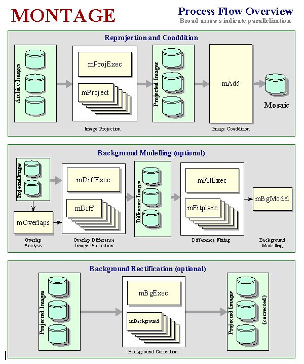

Montage Components
Before Building Montage:
When the tar file is first extracted, the following directories and files are created:
- README / README.release
- Instructions on building Montage and where to go for help
- ChangeHistory
- Text file describing the changes made in each version of Montage.
- LICENSE
- Montage user license
- Makefile
- The main Montage Makefile, which configures and builds the toolkit
- Montage/
- Source code for core Montage executables
- util/
- Source code for extra utilities
- grid/
- Source code for grid tools
- lib/
- Source code for libraries
- bin/
- Location for Montage excutables, once built
- python/
- Python wrapper around mViewer
- docs/
- Directory containing Montage documentation (like this)
Montage Executables
The figure below (taken from the Montage Software Specification) shows the core modules delivered with the Montage distribution:

After building Montage, the following executables will be placed in the bin folder:
Core Modules: [source code in the Montage subdirectory]
- mAdd
- Coadd the reprojected images using the same FITS header
template and working from the same mImgtbl
list as was used to reproject the image set.
- mAddCube
- Like mAdd but optimized for looping over the third (and fourth
if it exists) dimensions of set of data cubes.
- mAddExec
- Builds a series of outputs (which together make up a tiled output)
through multiple executions of the mAdd module.
- mBackground
- Remove a background from a single image (planar has proven
to be adequate for the images we have dealt with).
- mBgExec
- Run mBackground on all the images in the metadata table.
- mBgModel
- Modelling/fitting program which uses the image-to-image
difference parameter table to interactively determine a
set of corrections to apply to each image to achieve a
"best" global fit.
- mConvert
- Changes the datatype of an image (i.e., 64-bit floating point to 16-bit integer)
- mCoverageCheck
- Using an image metadata table, determine which images cover a given point, polygon, circle, or box.
- mDiff
- Perform a simple image difference between a single pair of
overlapping images. This is meant for use on reprojected images
where the pixels already line up exactly.
- mDiffExec
- Run mDiffmOverlaps.
- mFitplane
- Fit a plane (excluding outlier pixels) to an image. Meant for
use on the difference images generated above.
- mFitExec
- Run mFitplane on all the mOverlaps pairs.
Creates a table of image-to-image difference parameters.
- mDiffFitExec
- Runs both mDiff and mFitplane on all the mOverlaps pairs.
Creates a table of image-to-image difference parameters.
- mFlattenExec
- Performs mFitPlane and mBackground on a set of images.
- mGetHdr
- Strip the header from an image and write it to a text file.
- mHdrCheck
- Checks the header of an image to make sure all the keyword values are valid.
- mHdrtbl
- Makes a list (with WCS information) of all header files in the named directory.
- mImgtbl
- Extracts the FITS header information from a set of files
and creates an ASCII image metadata table which can be used by several
of the other programs.
- mMakeHdr
- From a list of images to be mosaicked together, mMakeHdr generates
the FITS header that best describes the output image.
- mMakeImg
- A general output FITS image is defined and its pixels are then populated from a table of
point sources. The source fluxes from the table are distributed based on a source-specific
point-spread function.
- mOverlaps
- Analyze an image metadata table to determine a list of overlapping
images.
- mProject
- Reprojects a single image to the scale defined in a pseudo-FITS
header template file (an ASCII file with the output image header
lines, but not padded to 80 characters and with newlines at the end
of each line). Actually produces a pair of images: the reprojected
image and an "area" image consisting of the fraction input pixel
sky area that went into each output pixel.
- mProjectCube
- Like mProject but optimized for looping over the third (and fourth
if it exists) dimensions of set of data cubes.
- mProjectPP
- Fast reprojection of images in tangent-plane projections.
- mProjExec
- A simple executive which runs mProject for each image
in an image metadata table.
- mPutHdr
- Replaces the header of the input file with one supplied by the user (presumably a "corrected" version of the input).
- mShrink
- Changes the binning of a FITS image.
- mShrinkCube
- Like mShrink but optimized for looping over the third (and fourth
if it exists) dimensions of set of data cubes.
- mSubimage
- Creates a subimage of a FITS image.
- mSubCube
- Like mSubimage but optimized for looping over the third (and fourth
if it exists) dimensions of set of data cubes. Since the nature of the
higher dimensions is dataset-specific, does not modify these in any way.
- mSubset
- mSubset generates a table of images that is a subset of the input
table, containing only those images that cover the area defined by a given
FITS header.
- mTblSort
- A simple sorter for table files. Only handles a single numeric column. For more
complicated manipulation, DBMS technology is more effective.
- mTanHdr
- mTANHdr analyzes a template file and determines if there would be an adequate equivalent
distorted TAN projection, within a specified tolerance, and outputs the alternate header.
- mTileHdr
- This module takes a header template file and creates another which represents one of a
regular set of tiles covering the original.
- mTileImage
- This module slices an input image into a series of output images (tiles).
Utilities: [source code in the util subdirectory]
- mArchiveList
- Retrieve a list of images that overlap a position on the sky.
- mArchiveGet
- Retrieve a FITS image from a remote archive.
- mArchiveExec
- Call mArchiveGet for each image in a table generated by mArchiveList.
- mBestImage
- From a list of images, determine which provides the best coverage for a location on the sky.
- mCatMap
- Point-source imaging program.
- mExamine
- Returns statistics on a FITS image. Mostly geometry but optionally a region can be
defined and various flux-related statistics on it will be returned as well.
- mExec
- Mosaicking executive for 2MASS, SDSS and DSS data.
- mFixNaN
- Converts NaNs in an image to some other value, or converts a range of values into NaNs.
- mHdr
- Create a FITS header template from user-supplied parameters.
- mHistogram
- The image viewer tool mViewer contains code to generate a histogram of the data
for stretching purposes. This program does the same thing, but writes the output
to a file for later use, either by mViewer or for user analysis.
- mJPEG
- Create a JPEG image from one or more input FITS images. This has been superceded by a more general
mViewer utility which handles overlays and can output PNG as well as JPEG. mViewer has its own
set of documentation.here.
- mPad
- Pad around the image with NULLs. This is usually just for visual effect or to allow
space for annotation, etc.
- mPix2Coord
- Given a FITS header, map a pixel coordinate to a sky location
- mRotate
- Perform a rotation on a FITS image
- mShrinkHdr
- Properly modify an existing FITS header template to represent the same
area with different-sized pixels.
- mTranspose
- The Montage datacube manipulation tools are designed to work only with files
where the sky coordinates axes are the first two in the file. This is not always
the case, so mTranspose is provided to allow conversion from any axis configuration
to another.
- mViewer
- Create a PNG or JPEG image from one or more input FITS images, included a number
of overlay modes. mViewer has its own set of documentation.here.
Grid Tools: [source code in the grid subdirectory]
These modules should be considered prototypes: they have been used extensively but have not been subject to the same rigorous testing to which the core modules have been subjected. We advise users to contact Montage (montage@ipac.caltech.edu) before employing them to verify limitations in their use and changes in the interfaces.
Brief descriptions of the tools available can be found here.